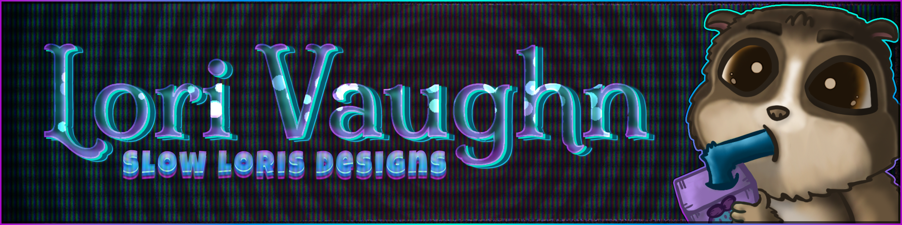

I'm pretty proud of the badges that I made for my Twitch channel, RealSlowLoris. One thing I learned while making them was how important it is to work within your constraints. Sometimes you have to remember that you have a tiny space to get across a big message and that's something I got a lot better at with this project.

About Me
Hi, I'm Loris of Slow Loris Designs! I enjoy spending most of my time learning every possible avenue of design. My favorite design themes range from "Retro" and "High Contrast" to "Pastel" with a side of "Cozy". I'm always up for a new challenge and will do whatever I can to bring the dreams of others to life.
Featured Work
My Projects So Far
-
First Quarter
- Playlist For A Robot: Mr. Robot's Awakening
- Internet Of the Past: Handmade Recipe Website
- Tribute Website: Tim Curry
- Field Guide: Dead By Daylight Survival Guide & Killer Grimoire